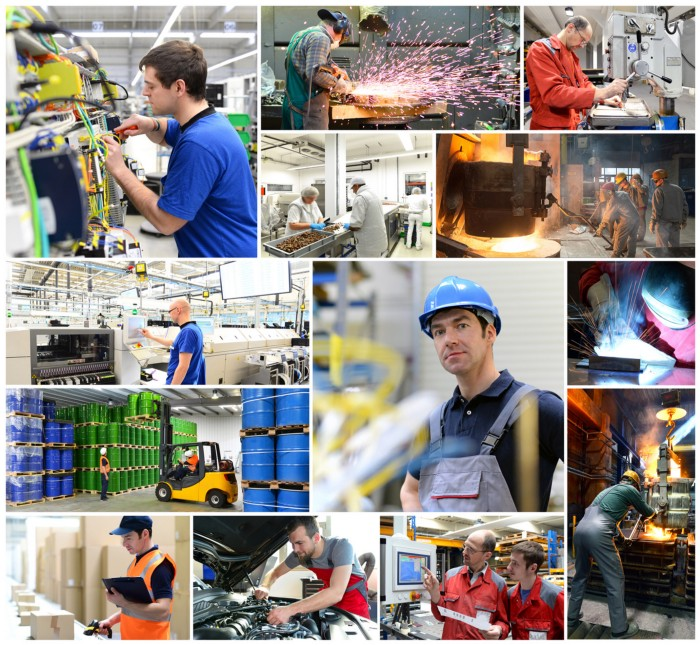

What occupies us?
Technology occupies us. Work occupies us. The internet occupies us. Startups occupy us. Everything we do occupies us.
We need something to occupy our brains, something to do every day throughout the year, something that uses more or less of our knowledge.
Our knowledge keeps us busy. Being occupied means doing something, whether useful or not.
Must you do something useful all the time? If it is useful to you or those around you, perhaps that is enough. Or do you do something useful for others? Must you change your daily schedule to be useful? No: be consciously useful, or useful when it suits you. Being consciously useful is better than not being useful at all. It is up to you and who you are; it is already within you.
Stay busy with things that matter to you or benefit you in several ways. Whom do you work for? Your boss and your company, ultimately earning a wage to feed yourself and keep a roof over your head. Your occupation is important among all occupations. Your job helps drive what you do outside work.
What to do?
What do you do after work? I mention two areas: the internet and technology. You use your smartphone, tablet, computer or television and go online. After work you might play sport, play a computer or console game, visit a coffee shop with friends or follow social media. My point is that much of what you do after work involves technology and the internet, connecting you to something that occupies you.
What does being occupied do for us?
The things that occupy us can be meaningful and affect the world we live in. Technology and the internet keep us busy, mostly positively: entertained, educated and informed. Connecting is easy.
The internet and technology are well represented among us and expanding. They can occupy people with things they have never tried but want to try; eventually newer technology will occupy them too.
Where technology is poorly represented, there must be ways to bring it there, helping people connect with one another, access entertainment, become educated and informed, and communicate.
The effects of what occupies us?
People need opportunities to be occupied in a developed society. Such a society has smart people available, and those people help open the way to a better economy, livelihood, stability and innovation.
Predictive behaviour or thinking means that behaviour can be anticipated within an environment and its development. We may predict the outcomes for a society with better options such as technology and the internet in a developing country.
To provide a community with power, infrastructure that can get it started is essential to its development and future.
Then technologies and the internet give people something to do, develop and occupy themselves with.
Ultimately a community with options such as technology and the internet has better prospects than one without, because of its occupations and strengths.
What changes?
Change with peace: better hope for people and a stable society. People become informed through communication and information.
People get the chance to learn and understand: to learn from technology, learn about other cultures and understand them, and learn and understand the difference between right and wrong.
Building a better path for the next generation, who will become the next developers, creators and inventors.
Growing up in a community with easy access to technology and the internet leads to more development.
Do not forget that you have paved the way for the younger generation. Give them the opportunities they need.
Opportunities to guide and educate them and keep them safe. Each generation helps keep the progress of civilisation stable, ensuring exploration and growth to new heights, learning from past mistakes and creating a better future for people.
How do we keep people occupied?

Through technology and the internet, and through startups. Startups use the internet and technology to keep us busy. They will change how we work, live, shop, entertain ourselves, communicate, travel, learn and socialise. We need only try them; if we like them, they will keep us occupied with the things we enjoy, with peace and progress.